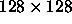

We won't provide any general explanation of the square-limit language here, since this is covered in section 2.2.4 of the textbook. One thing that is not explained in the book, however, is how primitive painters are implemented (see the book, pages 136-137) and how to actually use a painter to draw something on the screen.
The code for this assignment includes four ways to create primitive painters.
The simplest painters are created with number->painter, which takes a number as argument. These painters fill a frame with a solid shade of gray. The number specifies a gray level: 0 is black, 255 is white, and numbers in between are increasingly lighter shades of gray. Here are some examples:
(define black (number->painter 0)) (define white (number->painter 255)) (define gray (number->painter 150))
You can also specify a painter using procedure->painter, which takes a procedure as argument. The procedure determines a gray level (0 to 255) as a function of (x,y) position, for example:
(define vertical-shading (procedure->painter (lambda (x y) (* 255 y))))
The x and y arguments run from 0 to 1 and specify the fraction
that each point is offset from the frame's origin along the frame's
edges. Thus, the frame is filled out by the set of points (x,y)
such that .
A third kind of painter is created by segments->painter, as described in the textbook. This takes a list of line segments as argument. This paints the line drawing specified by the list segments. For example, the wave painter shown in figure 2.10 of the book is generated by
(define wave
(segments->painter
(list (make-segment (make-vect .25 0) (make-vect .35 .5))
(make-segment (make-vect .35 .5 ) (make-vect .3 .6))
(make-segment (make-vect .3 .6) (make-vect .15 .4))
(make-segment (make-vect .15 .4) (make-vect 0 .65))
(make-segment (make-vect .4 0) (make-vect .5 .3))
(make-segment (make-vect .5 .3) (make-vect .6 0))
(make-segment (make-vect .75 0) (make-vect .6 .45))
(make-segment (make-vect .6 .45) (make-vect 1 .15))
(make-segment (make-vect 1 .35) (make-vect .75 .65))
(make-segment (make-vect .75 .65) (make-vect .6 .65))
(make-segment (make-vect .6 .65) (make-vect .65 .85))
(make-segment (make-vect .65 .85) (make-vect .6 1))
(make-segment (make-vect .4 1) (make-vect .35 .85))
(make-segment (make-vect .35 .85) (make-vect .4 .65))
(make-segment (make-vect .4 .65) (make-vect .3 .65))
(make-segment (make-vect .3 .65) (make-vect .15 .6))
(make-segment (make-vect .15 .6) (make-vect 0 .85))
)))
The final way to create a primitive painter is from a stored image.
The procedure pgm-file->painter uses an image from the 6001
image collection to create a painter. For instance:
For instance:
(define rogers (pgm-file->painter "fovnder"))
will create the William Barton Rogers painter shown on page 130 of the textbook and give it the name rogers.
When the problem set code is loaded (don't load it yet!), it will create three graphics windows, named g1, g2, and g3. To paint a picture in a window, use the procedure paint. Paint takes a graphics window and a painter, determines the frame for the graphics window, and gives the frame to the painter. For example,
(paint g1 rogers)
will show a picture of William Barton Rogers in window g1.
There is also a procedure called paint-hi-res, which paints the
images at higher resolution ( rather than ). Painting at a higher resolution produces better looking
images, but takes four times as long. Depending on how fast your
computer is, you may want to work on this problem viewing images using
paint, and reserve paint-hi-res to see the details of
images that you find interesting. When you print images, we suggest that you print only
images created with paint-hi-res, not paint.
When you print images, we suggest that you print only
images created with paint-hi-res, not paint.
If these are correct, you should be able to evaluate the expression
(setup). This will create the three graphics windows and load
the rest of the problem set code, which includes all of the code from
section 2.2.4 of the textbook and the primitive painters black,
white, gray, vertical-shading, and rogers
described above. If setup works, you should be able to use
paint and paint-hi-res to view images of the primitive
painters. If you work on the
problem set in multiple sessions, be sure that you reload your data
abstraction definitions each time, before doing setup. You need
not turn in anything for this exercise.
If you work on the
problem set in multiple sessions, be sure that you reload your data
abstraction definitions each time, before doing setup. You need
not turn in anything for this exercise.
Check the 6.001 discussion forum for computer-ex-01
|
Look here
for information about the forum.
| |
Make a collection of primitive painters to use in the rest of this lab. In addition to the ones predefined for you, define at least one new painter of each of the four primitive types: a uniform grey level made with number->painter, something defined with procedure->painter, a line-drawing made with segments->painter, and an image of your choice that is loaded from the 6001 image collection with pgm-file->painter. Turn in a list of your definitions.
Check the 6.001 discussion forum for computer-ex-02
|
Look here
for information about the forum.
| |
Do exercise 2.50 of the textbook. The way to think about these transformations is to keep in mind where the new origin and edges of the frame should be. It will help to make a sketch. If you are confused by this, study the definition of rotate90 on page 139. Turn in a listing of your three procedures.
Check the 6.001 discussion forum for computer-ex-03
|
Look here
for information about the forum.
| |
Do exercise 2.51 of the textbook, which asks for two different definitions of the procedure below. The first definition can be tricky--make sure you understand how beside works. Turn in listings of both definitions.
Check the 6.001 discussion forum for computer-ex-04
|
Look here
for information about the forum.
| |
Do exercise 2.44 of the textbook, which asks you to define the procedure up-split. Turn in a listing of your up-split procedure. If you do this correctly (and also exercise 4), then corner-split and square-limit (both of which have been pre-defined for you) should work. You should now be able to duplicate the designs in figures 2.9 and 2.14 of the textbook.
Check the 6.001 discussion forum for computer-ex-05
|
Look here
for information about the forum.
| |
Examine the procedure squash-inwards (and also the diamond-shaped images in figures 2.10 and 2.11). You should be able to duplicate these, since squash-inwards is predefined in the problem set code. Define a couple of procedures that, like squash-inwards, draws in a non-rectangular frame. It's also interesting to make the corners of the diamond go outside the original square. Turn in a listing of your procedure.
Check the 6.001 discussion forum for computer-ex-06
|
Look here
for information about the forum.
| |
Spend some time creating some images using your primitive painters, together with the operations you've defined so far in this problem set such as beside, squashes, flips, and rotations. You needn't turn in anything for this exercise.
Check the 6.001 discussion forum for computer-ex-07
|
Look here
for information about the forum.
| |
Do exercise 2.45 of the textbook, which defines the general splitting operation split. In order not to overwrite the existing definitions of right-split and up-split, test your procedure by defining
(define new-right-split (split beside below)) (define new-up-split (split below beside))
Turn in a listing of split. Hint: This exercise will really test your understanding of higher-order procedures. The thing to keep in mind is that the result returned by split is a procedure that takes as arguments a painter and a number.
Check the 6.001 discussion forum for computer-ex-08
|
Look here
for information about the forum.
| |
Beside takes two painters as arguments and returns a painter. Below does likewise. Here's another example that is predefined in the problem-set code:
(define (superpose painter1 painter2)
(lambda (frame)
(painter1 frame)
(painter2 frame)))
Superpose simply draws both painters in the same
frame. Define one or two
other (interesting) means of combination that takes two painters as
arguments and produces a painter. You can use these (together with
beside, below, and superpose) in conjunction with
split, to produce new recursive designs. Explore some of
these. Turn in a listing of your procedures, together with a printout
of some interesting recursive design you've made, and the code that
produced it.
Define one or two
other (interesting) means of combination that takes two painters as
arguments and produces a painter. You can use these (together with
beside, below, and superpose) in conjunction with
split, to produce new recursive designs. Explore some of
these. Turn in a listing of your procedures, together with a printout
of some interesting recursive design you've made, and the code that
produced it.
Check the 6.001 discussion forum for computer-ex-09
|
Look here
for information about the forum.
| |
Invent a new higher-order combiner (like split) and see what interesting images you can create. Turn in the procedure listing and a printout of some interesting design made with it.
Check the 6.001 discussion forum for computer-ex-10
|
Look here
for information about the forum.
| |
Hopefully, you generated some appealing designs in doing this problem set. You are invited to enter printouts of your best designs in the 6.001 PS3 design contest. Turn in your design collection together with your homework, but stapled separately, and make sure your name is on the work. For each design, show the expression you used to generate it. Designs will be judged by the 6.001 staff and other internationally famous art critics, and fabulous prizes will be awarded in lecture. There is a limit of two entries per student. Make sure to turn in not only the pictures, but also the procedure(s) that generated them.
Turn in answers to the following questions along with your answers to the questions in the problem set: